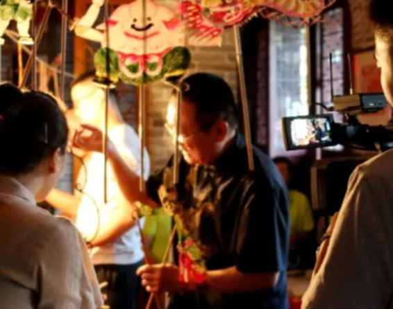

回到资讯“云”直播传袭老技艺 孝义市让非遗“活”起来“火”起来
“非遗+直播”接地气，让传统文化火热“出圈”，在线人数达1万多……。”孝义市文化惠民开启新模式，通过“云端”打破时空限制，让市民在“云”上品味文化大餐，更多的人成为传统文化的“新粉”。
非物质文化遗产，也许你觉得它很遥远。但它其实就在你我身边。它扎根民间，蕴藏在人们的衣食住行点滴之中，影响一代又一代的人们，我们传承非遗，就是传承一座城的文化根脉。
时而碎步轻移，时而翻转腾挪。近日，在位于孝义市新义街道办贾家庄村的民俗文化展览馆内，国家级非物质文化遗产（孝义皮影戏）第八代传承人侯建川正围站在一幅五尺白色幕布后面，表演着传统皮影戏西游记中故事《大变化》，一个木偶，在老艺人两根细长竹竿的操控下演绎的活灵活现的，如果不是亲眼所见，真令人难以置信
在孝义市皮影木偶剧团，跟随直播镜头只见专业摄影棚、置景车间、道具仓库等设施呈现眼帘，摄影师、灯光师、美工、木偶制作师、服装师等正在有条不紊各自忙碌着。在道具制作室里，一排排纸做的木偶造型生动夸张，惟妙惟肖，在师傅的操作下活灵活现。在直播镜头前，随着“锵锵锵”的戏曲乐声，木偶美猴王孙悟空出场亮相，一段流畅的金箍棒表演引得网友们纷纷留言评论；木偶在上，真人在下，台上的木偶瞬间活灵活现起来，在表演人员的操作下身着华丽服饰的木偶转起手绢、佛珠，还能空中翻腾，一系列高难度的动作让网友们点赞叫绝。
孝义皮影戏是一门古老的汉族传统艺术，中国皮影戏的重要支派之一，因流行于山西省孝义市而得名。皮影戏是通过白色布幕，观看平面偶人表演的灯影而产生艺术效果的戏剧形式，戏中的平面偶人以及场面道具景物，是民间艺人用手工刀雕彩绘而成的皮制品。皮腔是皮影戏的曲调，因皮腔音乐以唢呐为主要伴奏乐器，故又称"孝义吹腔"。孝义吹腔是中国最早的民间吹腔之一。
孝义皮影以麻纸糊窗作屏幕，凭借悬吊在纸窗后的麻油灯亮影，因此亦称"灯影儿"、"纸窗子"。一般纸窗面积为1.75m×1.21m。纸窗糊制有严格的裁纸、毛边、对口、粘贴、平整等5道工序，其窗平整无皱雪白无瑕。孝义皮影在明代之前以羊皮为雕刻材料，体高58~60cm,俗称"二尺影"。到清代，皮影体高缩至42~48cm，俗称"五尺影"，三岁牛皮为雕刻上等材料。孝义皮影造型粗犷，简练夸张，线条遒劲有力，极富韵味。
孝义木偶素有“三晋奇葩”之美称，因制作精美、操作传神逼真，表演手段独特而闻名国内外。
孝义木偶戏属杖头木偶戏，宋代时传入孝义地区。其木偶造型简洁粗犷，神态灵活生动，机关奇巧适用，极具北方特色。孝义木偶班社演出形式多样，素有“两种形式，三种唱腔”之说。“两种形式”是指木偶和皮影，孝义木偶戏原来独立成班，后与皮影戏合成“灯影班”，白天演木偶戏，晚上演皮影戏。“三种唱腔”是指皮腔、碗碗腔和中路梆子，孝义木偶戏最初演出时用孝义秧歌干板腔、皮腔和中路梆子（晋剧）演唱，后来又加入碗碗腔。皮影、木偶戏是由演员在幕后操纵各式各样的皮制道具，通过灯光投影到白色幕布上，并配之以乐器，伴之以唱腔、道白等，使观众听到和看到有声有色的各种戏剧故事。
2006年，孝义木偶戏入选国家级非物质文化遗产。早年间，孝义木偶戏仅流传在山西省吕梁孝义市及周边市县，后经政府支持，近年逐渐走出山西，远赴香港、台湾及海外多国交流演出。现如今，皮影木偶作为孝义文化的一张特色名片，正演绎着它不可或缺的文化特质，它所带来的传统文化魅力，将激励着一代又一代人不断学习传承，发扬光大。
“这皮影木偶戏演得真是太精彩了！唯一的缺点就是时间太短，还没看过瘾呢，真希望再多演1个小时。”“没想到不出家就能看到这么高水平的皮影木偶戏表演，这不仅丰富了咱老百姓的文化生活，更让我们感受到了非物质文化遗产的独特魅力……”。2个小时的非遗直播，不仅直观地为网友们展现了孝义市独特非遗文化，更让网友们了解了孝义地域、文化特色，对孝义产生了浓厚兴趣。
“传承发展非遗文化，需要紧跟时代潮流，让非遗借助各方资源插上腾飞的翅膀。”孝义市文旅局有关负责人表示，通过“直播+非遗”模式，不仅让非遗技艺以年轻姿态呈现在公众面前，吸引年轻用户关注，推动非遗在新时代语境下的活化与创新。对非遗好物也是一次积极尝试，提振孝义文旅发展信心。
直播现场，70岁的国家级非物质文化遗产传承人武兴介绍，表演者通过操纵木杖完成动作，它内部虚空，眼嘴可以活动，颈部下面接一节木棒或竹竿，也称“举偶”。经过多年研究及悉心传授，大部分年轻学员操纵木偶技艺高超，不仅可以表演甩发、喷火、舞长绸、梢子功、翎子功、佛珠转抛接等高难度动作，还可以表演川剧变脸、书法等绝技。
孝义皮影木偶剧团团长刘亚星告诉网友，今年以来，他们拍摄了大量的短视频，并定期开展网络直播，尽管目前他们的直播平台还没有形成流量爆款，但他相信，随着用户的积累以及对松桃苗绣精湛技艺的展示，一定会达到质的飞跃。
这不只是一场简单的直播，
这是孝义人对非遗文化的宣讲！
它代表了孝义人的态度！
让非遗搭上互联网直播新时代，利用互联网的工具，扩大非遗的影响，加强非遗在人民群众心目中的地位，受益人群也从过去的中老年到现在的青少年和年轻人，受众的年龄层次越来越低龄，接受中国传统文化的人群越来越多。我们砥砺前行，奋力为非遗发声，只为让它重新走进生活。
让非物质文化遗产，不再是，遗产。
发展简史：
- 战国/宋金
孝义皮影起源于战国，是中国最早的皮影发源地之一。

- 明清
明清时为孝义皮影的鼎盛期，孝义境内皮影班社多达60多家，随后逐渐衰落。
-
- 1950年
1956年成立孝义市木偶皮影艺术团，"文革"时期撤消。
-
- 1978年
1978年恢复皮影戏演出，曾参加首届中国艺术节演出，赴英国交流访问演出。
-
- 1995年
1995年，孝义皮影中的武将形象作为邮票图案被全国人民认识。
-
- 至今
孝义皮影剧目丰富，现收藏有200余本，这些剧本题材广泛，内容丰富，极具学术价值。